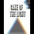

<html>
 <head>
  <title>
   Spirit Cooking Podesta - What started it all
  </title>
  <meta content="Post on /v/Pizzagate archived on 2017-03-15 by Projectastral." name="description"/>
  <meta content="Spirit Cooking Podesta - What started it all" property="og:title"/>
  <meta content="Post on /v/Pizzagate archived on 2017-03-15 by Projectastral." property="og:description"/>
  <link href="../../page.css" rel="stylesheet"/>
  <meta content="https://voat.pizzagate.hackliberty.org/thumbnails/9e/60/9e604a2d-ef03-47b6-b143-888331c472d0.jpg" property="og:image"/>
  <meta content="https://voat.pizzagate.hackliberty.org/v/pizzagate/1722710.html" property="og:url"/>
 </head>
</html>
<body class="dark">
 <div id="container">
  <!-- array (
  'submissionid' => 1722710,
  'creationDate' => '2017-03-15 23:50:13',
  'domain' => 'projectastral.net',
  'formattedContent' => NULL,
  'isAdult' => 0,
  'isAnonymized' => 0,
  'subverse' => 'pizzagate',
  'thumbnail' => '9e604a2d-ef03-47b6-b143-888331c472d0.jpg',
  'title' => 'Spirit Cooking Podesta - What started it all',
  'url' => 'https://projectastral.net/2016/11/04/spirit-cooking-podestacake-of-the-light/',
  'userName' => 'Projectastral',
  'archivedLink' => NULL,
  'archivedDomain' => NULL,
  'isDeleted' => 0,
) -->
  <div style="text-align:center; font-size:24px; font-weight:bold;">
   Voat /v/Pizzagate Archive
  </div>
  <div class="content" role="main">
   <div class="sitetable linklisting" id="siteTable">
    <div class="submission id-1722710 link type-text" id="submission-1722710">
     <a name="submissionTop">
     </a>
     <p class="parent">
     </p>
     <a class="thumbnail may-blank" href="https://projectastral.net/2016/11/04/spirit-cooking-podestacake-of-the-light/" target="_self">
      
     </a>
     <div class="entry unvoted">
      <p class="title">
       <a class="title may-blank" href="https://projectastral.net/2016/11/04/spirit-cooking-podestacake-of-the-light/" tabindex="1" target="_self" title="Spirit Cooking Podesta - What started it all">
        Spirit Cooking Podesta - What started it all
       </a>
       <span class="domain">
        (
        <a href="https://archive.searchvoat.co/search.php?d=projectastral.net">
         projectastral.net
        </a>
        )
       </span>
      </p>
      <p class="tagline">
       submitted
       <time datetime="2017-03-15T23:50:13+00:00" title="03/15/2017 11:50:13 PM">2017-03-15T23:50:13</time> by
       <span class="userattrs">
        <a class="author may-blank" href="https://archive.searchvoat.co/search.php?u=Projectastral">
         Projectastral
        </a>
       </span>
      </p>
      <ul class="flat-list buttons">
       <li class="first">
        <a class="comments may-blank" href="https://archive.searchvoat.co/v/pizzagate/1722710" rel="nofollow">
         No comments
        </a>
       </li>
      </ul>
     </div>
     <div class="child">
     </div>
     <div class="clearleft">
     </div>
    </div>
    <div class="clearleft">
    </div>
   </div>
   <div class="horizontal-line">
   </div>
   <div class="commentarea">
    <div class="sitetable nestedlisting" id="siteTable">
    </div>
   </div>
  </div>
 </div>
 <div class="footer-container">
 </div>
</body>
